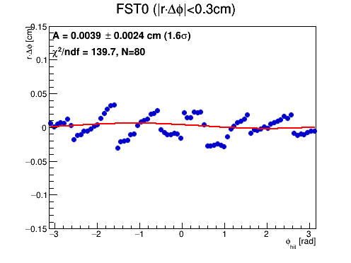
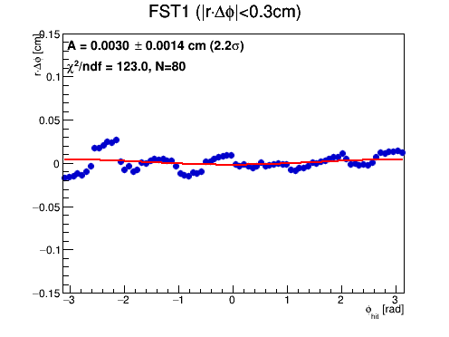
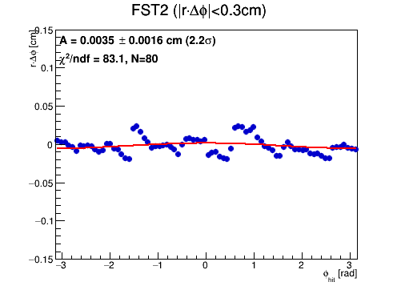

← back to wedge-correction validation | before (uncorrected) version of this page
More Detailed Look at r#middot#Delta#phi vs #phi — AFTER Per-Wedge Phi Correction
- This is the corrected (FstWedgeAligner applied) version of ../../../translation/index.html — same 15 files as the before/after table on wedgecorrection/index.html.
- Source:
DataDisk/wedgecorr_condor/*.FwdAlignment_BLCVtx.root (track type: BLCVtx (wedge-corrected)), 15 files, 8138945 rows
- Profile (mean per #phi bin, core cut |r#middot#Delta#phi|<0.3cm) of the 2D r#middot#Delta#phi-vs-#phi histogram from distributions.html (the AFTER-correction version), plus a sine fit A#middot sin(#phi-#phi0).
- Scripts:
script/plotFwdAlignmentResidual.C, script/testFwdAlignmentTranslation.C
| Disk | N(fit pts) | Amplitude [cm] | χ²/ndf | sig | plot |
|---|
| FST0 (z=151.8) | 80 | 0.0039±0.0024 | 139.7 | 1.6 |  |
| FST1 (z=165.2) | 80 | 0.0030±0.0014 | 123.0 | 2.2 |  |
| FST2 (z=178.8) | 80 | 0.0035±0.0016 | 83.1 | 2.2 |  |
After-correction observations
- Sine amplitude and χ²/ndf both drop substantially vs. the uncorrected page (core, before → after): FST0 0.0089±0.0050→0.0039±0.0024 cm (χ²/ndf 8241.5→139.7); FST1 0.0096±0.0040→0.0030±0.0014 cm (12806.1→123.0); FST2 0.0145±0.0029→0.0035±0.0016 cm (3390.0→83.1). Note the before numbers are from the full 150-file set and after from the 15-file corrected subset, so this is illustrative, not a controlled comparison.
- χ²/ndf is still far from 1 (~80-140) on every row, consistent with real structure remaining after correction (see wedgecorrection/index.html's "why the steps aren't fully eliminated" discussion).
OGAWA, Akioakio@bnl.gov
{kind=link}
{kind=link}
{kind=link}